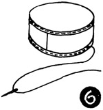

1952—How to Make Hats
by Ruby Carnahan
Making a Basic Sailor Frame
MATERIAL REQUIRED
- 1/2 yard of elastic net
- frame wire
- wire joiners
- heavy thread No. 24
DESCRIPTION
Make a sailor frame pattern following instructions on page 15. Or use the sailor frame pattern in book on page 34. Always remember to use your correct headsize when making a pattern.
SAILOR BRIM
Place pattern on elastic net and mark around pattern brim and headsize (Illus. 1. Cut out brim edge on line drawn, do not cut out headsize. (Illus. 2) Slash inside headsize line from back to front, and from side to side and then slash every 1/2" around headsize. Bend elastic net segments back 1" to line around headsize and cut off excess. Mark back and front of brim.
SAILOR CROWN
Place crown tip pattern on elastic net, mark around pattern and cut out crown tip on line. Cut a bias piece of elastic net for side crown. The width of bias piece will depend on height of crown, usually 2" to 2 3/4". Mark back and front of crown.
WIRING SAILOR FRAME
(Illus. 3) Cut a wire to fit sailor brim and join ends of wire with a wire joiner. Sew wire on edge of brim frame using a button hole stitch. Cut two pieces of wire to fit crown tip and join ends of wire with a wire joiner. Sew one wire on edge of crown tip (Illus. 4). Hold one edge of bias elastic net, bias side crown, to wired crown tip. (Illus. 5) Overcast side crown to crown tip, lapping ends of side crown in back and sew. Sew wire around bottom of side crown using a button hole stitch.
BINDING WIRED EDGES OF FRAME
(Illus. 6 and 7) Cut bias strips of crinoline 2" wide (stretch before using), fold over wired edges and baste to frame.
SEWING CROWN AND BRIM TOGETHER
Match markings on crown and brim, slip crown over headsize on brim and sew together (Illus. 8).
Instructions for covering frames page 28.